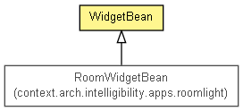

context.arch.widget
Class WidgetBean
java.lang.Object
 context.arch.widget.WidgetBean
context.arch.widget.WidgetBean
- Direct Known Subclasses:
- RoomWidgetBean
public class WidgetBean
- extends java.lang.Object

Convenience method to declare a widget using the Java Beans paradigm.
Attributes are defined as instance fields
Public fields would be considered non-constant attributes, while
protected fields would be considered constant attributes.
|
Field Summary |
protected java.lang.String |
id
|
protected java.lang.String |
widgetClassName
|
|
Constructor Summary |
protected |
WidgetBean(java.lang.String widgetClassName,
java.lang.String id)
|
| Methods inherited from class java.lang.Object |
clone, equals, finalize, getClass, hashCode, notify, notifyAll, toString, wait, wait, wait |
widgetClassName
protected java.lang.String widgetClassName
id
protected java.lang.String id
WidgetBean
protected WidgetBean(java.lang.String widgetClassName,
java.lang.String id)
getWidgetClassName
public java.lang.String getWidgetClassName()
getId
public java.lang.String getId()
urlEncode
public static java.lang.String urlEncode(java.lang.String s)
getWidget
public static Widget getWidget(WidgetBean bean)
- Static method to get a Widget from the WidgetBean declaration.
- Parameters:
bean -
- Returns:
createAttribute
public static <T extends java.lang.Comparable<? super T>> Attribute<T> createAttribute(java.lang.reflect.Field field,
WidgetBean bean,
boolean constant)
primitiveToWrapperClass
public static java.lang.Class<?> primitiveToWrapperClass(java.lang.Class<?> type)